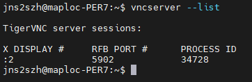
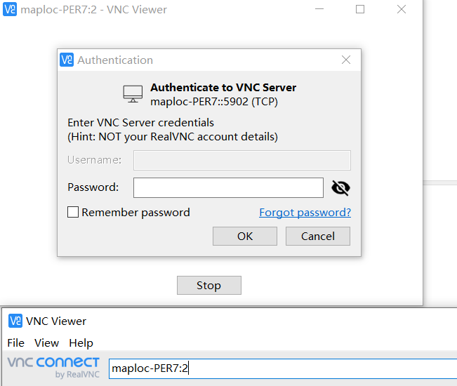
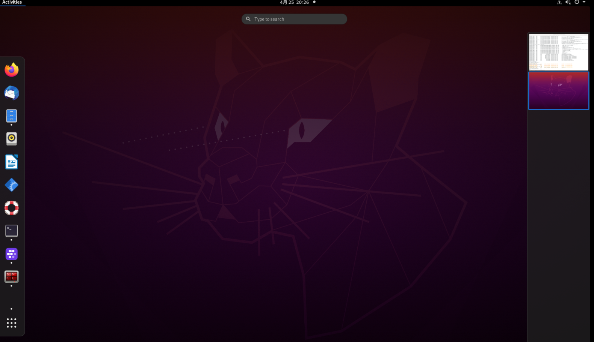

VNC configuration
This tutorial is suitable for Ubuntu20.04,
Server/personal workstation command:
sudo apt-get updatesudo apt install tigervnc-standalone-servercdmkdir .vnccd .vncvim xstartup # xstartup file content, fill in and save exit #!/bin/sh# Start Gnome 3 Desktop [ -x /etc/vnc/xstartup ] && exec /etc/vnc/xstartup[ -r $HOME/.Xresources ] && xrdb $HOME/.Xresourcesvncconfig -iconic &dbus-launch --exit-with-session gnome-session & # May prompt the password, this password will be useful to log in to the Windows client later # Close the current VNC vncserver -kill:* # Open VNCSER vncserver --localhost no #========= Other ========= # indivual loginctl list-sessions # Close specific VNC The ID of loginctl unlock-session query Windows client:
VNC-Viewer-6.19.325-Windows-32bit.exe.zip
Login example:

Fill in the computer name or IP address, plus Display ID

